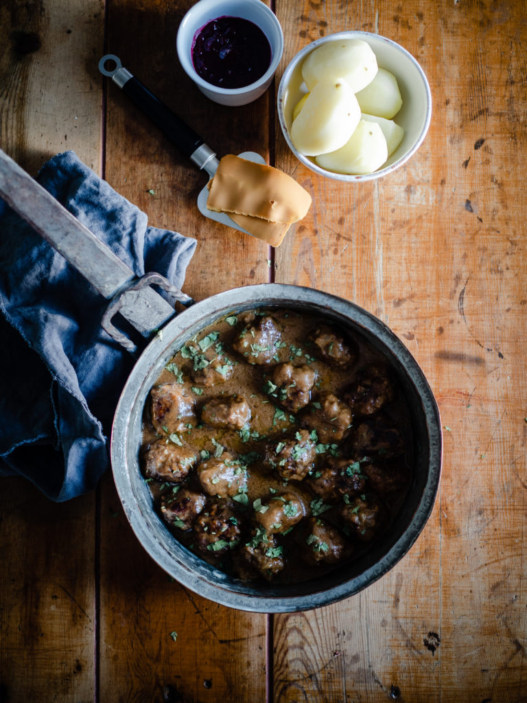

Norwegian Brown Cheese Meatballs (Kjøttkaker med Brunost)

Description
Meatballs might be one of the most well-known Nordic dishes, with variations found in other countries as
well. There’s something about the meatball that makes Norwegians, like their Nordic neighbors, hold it such
high regard. In fact, kjøttkaker was a top contender for Norway’s national dish – just being topped by
fårikål, a dish of slow-cooked lamb and cabbage.
Ingredients
For 4 portions
For the meatballs:
- 1 ¼ pounds minced/ground beef
- 1 teaspoon salt
- 1 teaspoon nutmeg
- ½ teaspoon ground black pepper
- ½ small onion, finely chopped
- 1 egg
- ½ cup milk
- 100 g Norwegian Brown Cheese, grated
- 2 tablespoons potato starch
- 1 tablespoon oil, for cooking
For the brown sauce:
- 4 tablespoons butter
- 4 tablespoons all-purpose flour
- 2 cups beef stock
- ¼ teaspoon salt
Steps
- In a large bowl, combine all the ingredients for the meatballs, except the oil, with your hands to
ensure everything is blended together. Form about 20 meatballs.
-
In a large, heavy skillet or sauté pan, heat the oil over medium-high heat. Add the meatballs and cook,
turning, for 5 minutes or until brown on all sides.
-
For the brown sauce, in a large, heavy saucepan, melt the butter over medium heat. Whisk in the flour
and cook, whisking frequently, for 6 to 8 minutes or until dark brown – be careful not to burn the
flour. Slowly add the beef stock, whisking to combine, and salt. Pour the sauce over the meatballs (I
keep all the juices released from the meatballs as they brown) and bring to a boil. Lower the heat and
gently simmer for 15 minutes or until the meatballs are cooked through. Season to taste with salt and
pepper.
-
Serve warm with boiled potatoes, a dab of lingonberry jam, if you have some, and vegetables of your
choice.
Source: North
Wild Kitchen